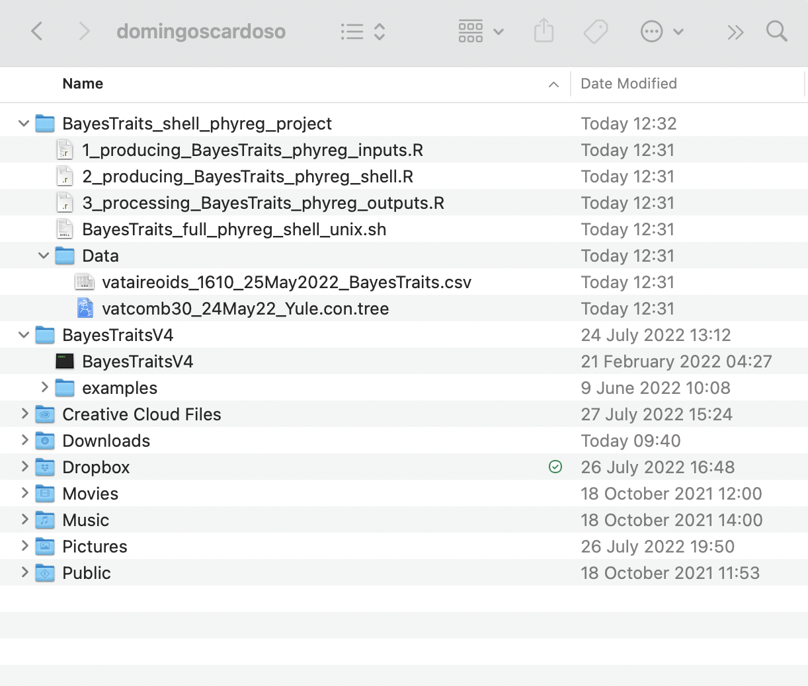
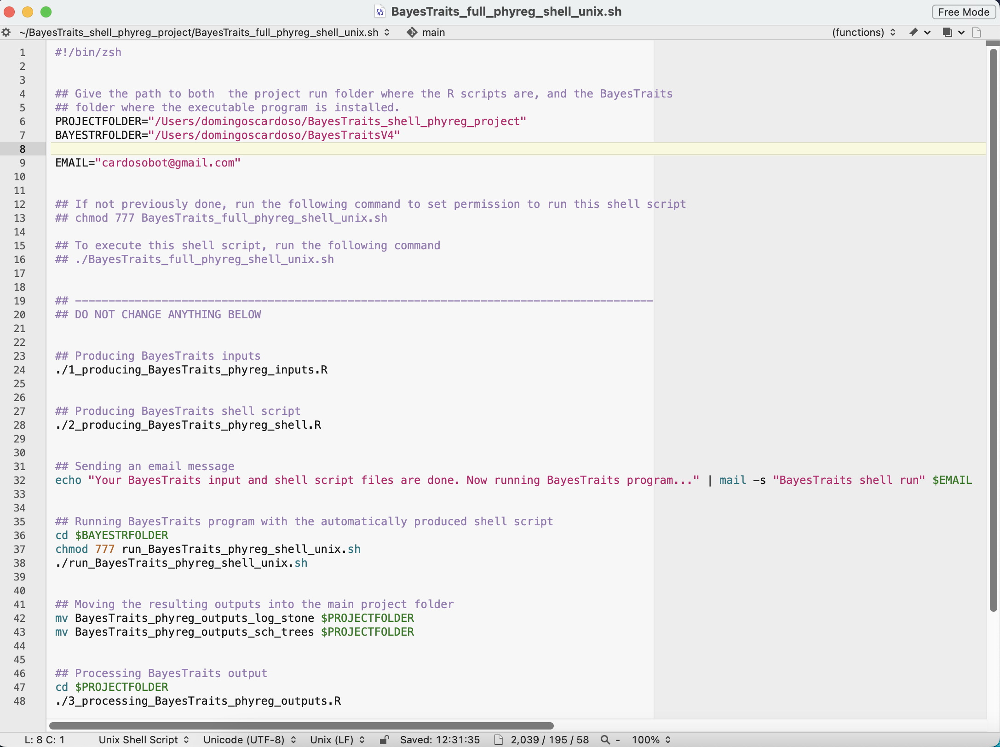
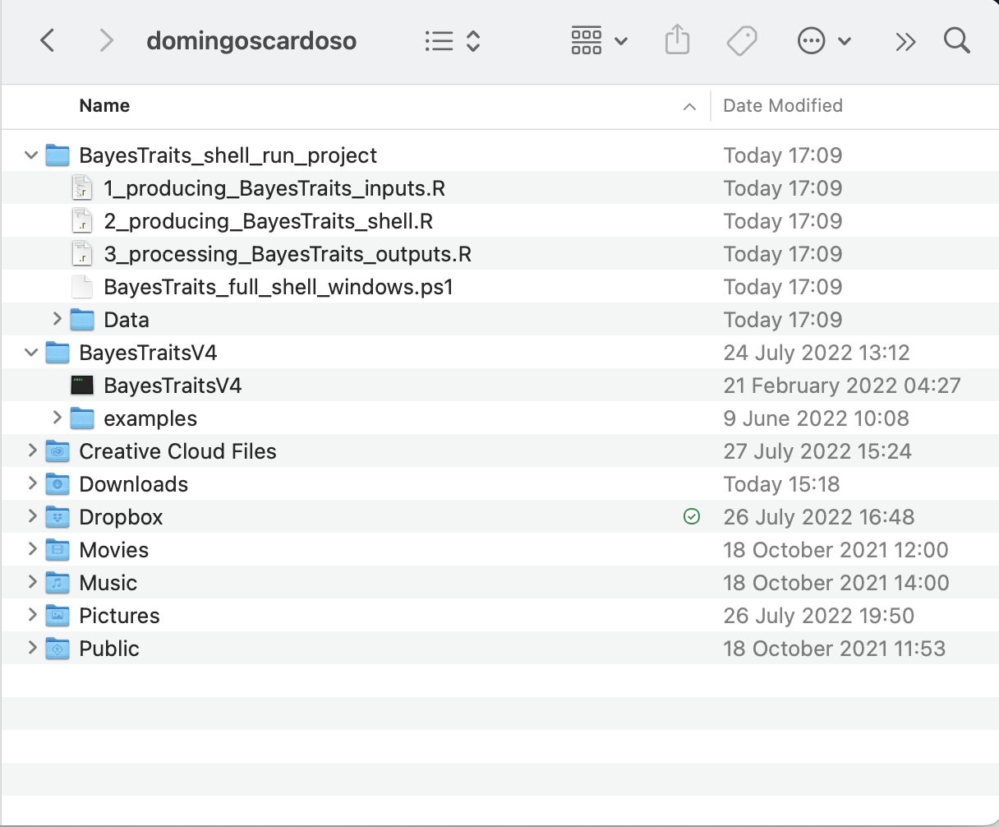
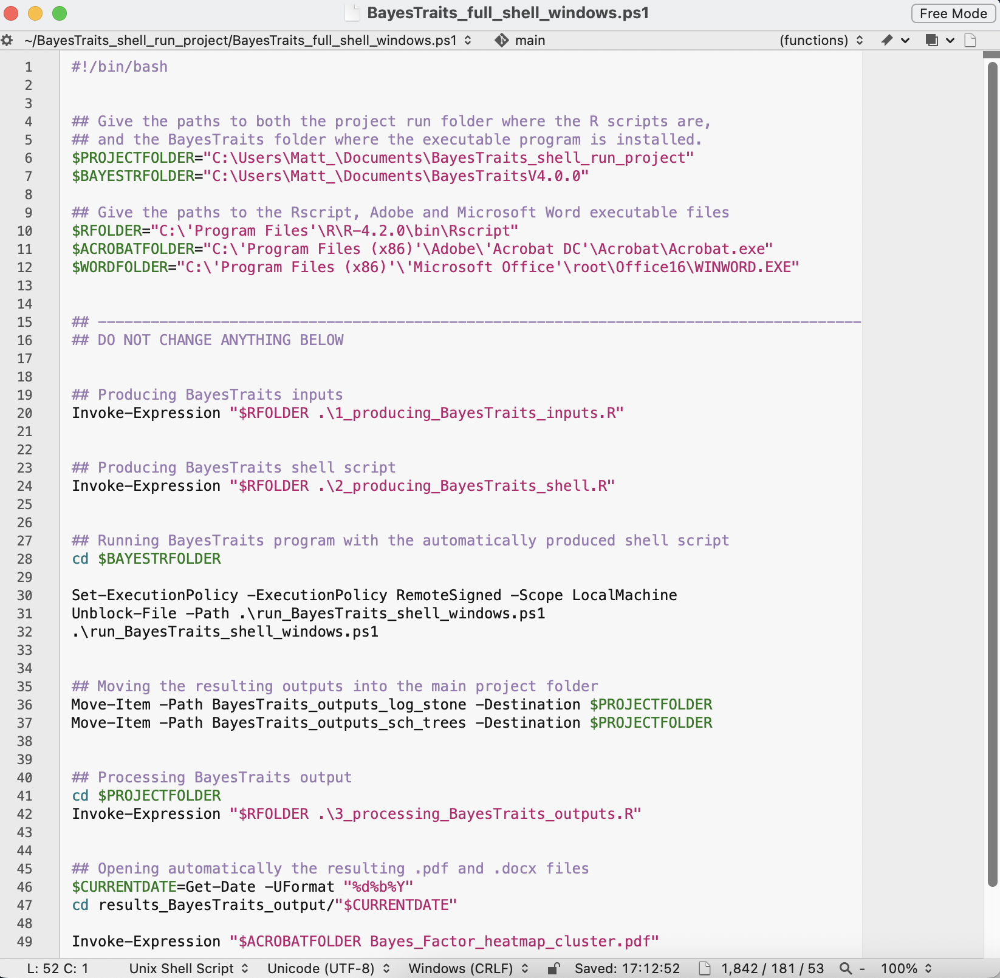

Fully automated regression analysis and log processing with a shell script
Source:vignettes/articles/phyreg_shell_project.Rmd
phyreg_shell_project.Rmd
The main goal of the InNOutBT package is to readily
create input data and process output data for Meade & Pagel’s (2022)
BayesTraits
program.
Here in this article, we show how to use InNOutBT’s
function shell.phyreg.proj for a full shell script run and
log processing of multiple phylogenetic regression analyses with Meade
& Pagel’s (2022) BayesTraits
program. By reporting a directory path and the computer’s operating
system (“unix” or “windows”), this function creates the project folder
BayesTraits_shell_phyreg_project with associated
example scripts.
The available example of a shell script in Unix or Windows PowerShell
helps to fully automate both the complete BayesTraits regression
analyses and the processing of the resulting log and stones files, by
automatically running the three main InNOutBT functions
phyreg.inputs, phyreg.shell, and
phyreg.outputs, without directly opening the R or RStudio
programs.
Note that the BayesTraits_shell_phyreg_project
folder that comes with InNOutBT package was originally
used in our recently published specific study on the ecological
diversification of the Vataireoid legumes. So, you will have to edit the
folder paths and analysis parameters in these example scripts according
to your desired regression analyses. See the associated articles on how
to set the parameters to create
input files with phyreg.inputs for the phylogenetic
regression analyses, as well as to create
the internal shell script with phyreg.shell for the
actual BayesTraits runs, and to process
the resulting output files with phyreg.outputs. You
might also want to see the BayesTraits
5.0.3 Manual for further details on each of BayesTraits parameters
available for phylogenetic regressions so as to better understand how to
set the arguments available in the InNOutBT
functions.
Setup
InNOutBT is not on CRAN yet, but you can install the latest development version from GitHub:
#install.packages("devtools")
devtools::install_github("DBOSlab/InNOutBT")Creating a Unix shell project folder
The shell.phyreg.proj function is very simple and has
only two arguments. By just setting any path on your computer and the
argument syst = "unix", you can readily create the project
folder BayesTraits_shell_phyreg_project with associated
example files (R scripts, shell script, and data folder) for running the
phylogenetic regressions of the Vataireoid legumes on macOS Monterey.
But then you can easily modify such available scripts for your specific
analyses.
library(InNOutBT)
shell.phyreg.proj(dir_create_proj = "/Users/domingoscardoso",
syst = "unix")After running the shell.phyreg.proj function, it will
readily create the project folder
BayesTraits_shell_phyreg_project, a data folder with
the input data files
vataireoids_1610_25May2022_BayesTraits.csv and
vatcomb30_24May22_Yule.con.tree, as well as the main
shell script BayesTraits_full_phyreg_shell_unix.sh and
R scripts 1_producing_BayesTraits_phyreg_inputs.R,
2_producing_BayesTraits_phyreg_shell.R, and
3_processing_BayesTraits_phyreg_outputs.R.

You should see the associated articles on how to set the parameters to create input files with
phyreg.inputs for the phylogenetic
regression analyses, as well as to create
the internal shell script with phyreg.shell for the
actual BayesTraits runs, and to process
the resulting output files with phyreg.outputs. In
these articles, you will find how to fully edit the R scripts
1_producing_BayesTraits_phyreg_inputs.R,
2_producing_BayesTraits_phyreg_shell.R, and
3_processing_BayesTraits_phyreg_outputs.R according to
your particular study. Otherwise, if you run the example files with the
same parameter settings, you will be able to fully reproduce the
analysis of our Vataireoid legume study.The main shell script file
BayesTraits_full_phyreg_shell_unix.sh performs the full
phylogenetic regression analysis and processing of results. Its first
lines hold the paths to your folders, as shown in the image below, which
you will set in the next section. The path in the image is an example
from an earlier version of BayesTraits, so yours will be
different.

Running the Unix shell script
You will work with two folders: the project folder
BayesTraits_shell_phyreg_project and the folder where
the BayesTraits executable file is installed. You always start the
analysis from the project folder. You do not need to
open the BayesTraits folder, because the main shell script moves there
by itself to run the analyses, and then brings the results back to the
project folder.
Before the first run
1. Download and install BayesTraits
in any folder. Note the path to that folder and the name of the
executable file, such as BayesTraitsV5.
2. Check that the executable file starts, by running its full path in the Terminal. If it starts and keeps waiting, press Control + C to leave it.
If macOS stops the program, for instance with the message killed or a warning that it cannot be opened, this is because macOS blocks programs downloaded from the internet that are not signed. If you trust the source of the download, remove the block with the following line, and then check again:
3. Check that InNOutBT and treeio are installed in R. The package treeio is used to read the tree in the first R script and is available from Bioconductor:
#install.packages("BiocManager")
BiocManager::install("treeio")4. Check in the Terminal that
pandoc is available, because it is needed to write the
Word table. If the following line returns FALSE, install pandoc:
Editing the project files
Open each of the following files in any text editor, such as
RStudio.
5. In the main shell script
BayesTraits_full_phyreg_shell_unix.sh, set:
- PROJECTFOLDER: the path to the project folder;
- BAYESTRFOLDER: the path to the folder that contains the BayesTraits executable file, not the path to the file itself;
-
EMAIL: your e-mail address, to receive a message
when the analyses start and finish. This depends on your computer being
set up to send e-mail with the
mailcommand, but the analyses will run even if the message is not sent.
PROJECTFOLDER="/Users/yourname/BayesTraits_shell_phyreg_project"
BAYESTRFOLDER="/Users/yourname/BayesTraits"
EMAIL="your.address@example.com"6. In the R script 2_producing_BayesTraits_phyreg_shell.R, set the same BayesTraits folder again, as well as the name of the executable file. Both paths to the BayesTraits folder must be identical:
7. For your own study, also edit the three numbered
R scripts as described in the articles mentioned above, and replace the
files in the Data folder. To check that everything
works before a long analysis, you can first set a few iterations in
2_producing_BayesTraits_phyreg_shell.R, such as
bi = "2000", it = "12000",
sa = "500", and st = c("10", "200"). These
values are only for testing, so set your final values again before the
real analysis.
Running the analysis
8. Open the Terminal and move to the project folder:
9. Allow the main shell script to run. You need to do this only once:
10. Start the full analysis:
Keep the Terminal open and the computer awake until the script
finishes. With the number of iterations in the example scripts, this can
take a long time.
What the script does
The main shell script then performs the following steps, with no
further action from you:
1. Runs
1_producing_BayesTraits_phyreg_inputs.R, which saves
the input files in the folder
results_BayesTraits_phyreg_input;
2. Runs
2_producing_BayesTraits_phyreg_shell.R, which saves the
run commands in the folder
results_BayesTraits_phyreg_shell and copies them to the
BayesTraits folder, with the data and tree files;
3. Moves to the BayesTraits folder and runs all the
analyses, removing the copied files at the end;
4. Moves the results to the folders
BayesTraits_phyreg_outputs_log_stone and
BayesTraits_phyreg_outputs_sch_trees in the project
folder;
5. Runs
3_processing_BayesTraits_phyreg_outputs.R, which saves
the final table and the heatmaps in the folder
results_BayesTraits_phyreg_output, within a subfolder
named with the current date, and opens these files.
If something goes wrong
The script continues after an error, so one problem can produce many
messages. Look at the first error in the Terminal,
because the later ones are often just consequences.
| Message | Likely cause and solution |
|---|---|
chmod: BayesTraits_full_phyreg_shell_unix.sh: No such file or directory |
You are not in the project folder. Repeat step 8. |
cannot open file '.../run_BayesTraits_phyreg_shell_unix.sh' |
BayesTraits_dir is wrong in
2_producing_BayesTraits_phyreg_shell.R. See step
6. |
cd: no such file or directory |
BAYESTRFOLDER is wrong in the main shell
script. See step 5. |
killed, or many
mv: rename ...Log.txt ...: No such file or directory
messages |
BayesTraits did not run. macOS may have blocked it
(step 2), or BayesTraits_exe is wrong (step 6). |
Error in combinat::combn(fnames, 2) : n < m |
There are no results to process, because BayesTraits did not run. Solve the first error shown. |
Creating a Windows PowerShell project folder
In the shell.phyreg.proj function, you can set any path
on your PC and the argument syst = "windows" to readily
create the project folder
BayesTraits_shell_phyreg_project with associated
example files (R scripts, PowerShell script, and data folder) for
running the phylogenetic regressions of the Vataireoid legumes on a
Windows PC. But then you can easily modify such available scripts for
your specific analyses.
library(InNOutBT)
shell.phyreg.proj(dir_create_proj = "C:/Users/Matt_/Documents",
syst = "windows")After running the shell.phyreg.proj function, it will
readily create the project folder
BayesTraits_shell_phyreg_project, a data folder with
the input data files
vataireoids_1610_25May2022_BayesTraits.csv and
vatcomb30_24May22_Yule.con.tree, as well as the main
PowerShell script
BayesTraits_full_phyreg_shell_windows.ps1 and R scripts
1_producing_BayesTraits_phyreg_inputs.R,
2_producing_BayesTraits_phyreg_shell.R, and
3_processing_BayesTraits_phyreg_outputs.R.

You should see the associated articles on how to set the parameters to create input files with
phyreg.inputs for the phylogenetic
regression analyses, as well as to create
the internal shell script with phyreg.shell for the
actual BayesTraits runs, and to process
the resulting output files with phyreg.outputs. In
these articles, you will find how to fully edit the R scripts
1_producing_BayesTraits_phyreg_inputs.R,
2_producing_BayesTraits_phyreg_shell.R, and
3_processing_BayesTraits_phyreg_outputs.R according to
your particular study. Otherwise, if you run the example files with the
same parameter settings, you will be able to fully reproduce the
analysis of our Vataireoid legume study.The main PowerShell script file
BayesTraits_full_phyreg_shell_windows.ps1 performs the
full phylogenetic regression analyses and processing of results. Its
first lines hold the paths to your folders and programs, as shown in the
image below, which you will set in the next section. The paths in the
image are examples from an earlier version of BayesTraits and R, so
yours will be different.

Running the Windows PowerShell script
As in Unix, you always start the analysis from the project
folder, and the main PowerShell script moves to the BayesTraits
folder by itself. You may also want to find further
information on how to use Windows PowerShell.
Editing the project files
1. In the main PowerShell script
BayesTraits_full_phyreg_shell_windows.ps1, set
$PROJECTFOLDER to the path of the project folder, and
$BAYESTRFOLDER to the path of the
folder that contains the BayesTraits executable file.
Also set the paths to the Rscript, Adobe Acrobat, and Microsoft Word
executable files in $RFOLDER,
$ACROBATFOLDER, and $WORDFOLDER;
2. In the R script
2_producing_BayesTraits_phyreg_shell.R, set
BayesTraits_dir to the same path as
$BAYESTRFOLDER, and BayesTraits_exe to the
name of the executable file, such as "BayesTraitsV5";
Running the analysis
3. Open PowerShell as Administrator;
4. Move to the project folder
BayesTraits_shell_phyreg_project, i.e. the same where
you should have the main PowerShell script
BayesTraits_full_phyreg_shell_windows.ps1;
5. Execute the following line and choose option
[Y]Yes;
Set-ExecutionPolicy -ExecutionPolicy RemoteSigned -Scope
LocalMachine
6. Execute the following line:
Unblock-File -Path
.\BayesTraits_full_phyreg_shell_windows.ps1
7. Then perform the full R and BayesTraits run using
the PowerShell script by executing the following line:
.\BayesTraits_full_phyreg_shell_windows.ps1